Particle updaters
Intermediate Artist Programmer
After a particle spawns, it can change over time before it disappears. Updaters act on all living particles over time, changing attributes such as position, velocity, color, and so on. For example, a gravity force updates the particle's velocity at a constant rate, accelerating it toward the ground.
Stride features several built-in updaters. The custom particles sample demonstrates how you can add updaters to the engine.
Common properties
Several properties are common across many updaters.
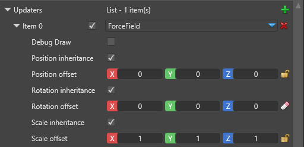
| Property | Description |
|---|---|
| Debug draw | Draws a debug wireframe shape to show the boundaries for the updater. This feature only works for the editor and is ignored when you run your game. |
| Position inheritance | Inherit the particle system component position, as defined in the Transform field |
| Position offset | Additional translation of the module. If it inherits the parent's position, this is applied on top of the inherited one. |
| Rotation inheritance | Inherits the particle system component rotation, as defined in the Transform field |
| Rotation offset | Additional rotation of the module. If it inherits the parent's rotation, this is applied on top of the inherited one. |
| Scale inheritance | Inherits the particle system component's uniform scale, as defined in the Transform field. |
| Scale offset | Additional module scaling. If it inherits the parent scale, this is applied on top of the inherited one. |
Collider
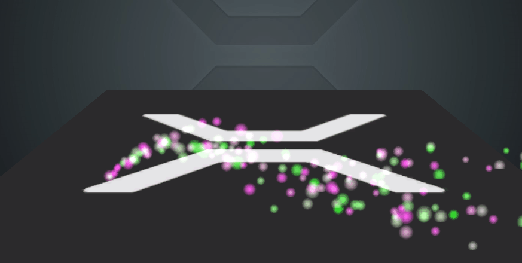
A collider is an updater that changes the particle position and velocity when it collides with a predefined shape.
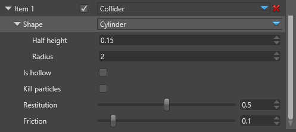
| Property | Description |
|---|---|
| Shape | The shape the particles collide with (sphere, cylinder, box, or torus) |
| Is hollow | If disabled, the shape is solid and the particles bounce off it. If enabled, the shape is hollow like a container, and the particles stay inside the volume. |
| Kill particles | If enabled, the particles are killed immediately when they collide with the shape. |
| Restitution | The coefficient of restitution is the speed the particle retains in comparison to its speed before the collision. In this updater we use restitution as a vertical only speed. It doesn't affect the speed along the surface. |
| Friction | The amount of horizontal speed the particle loses on collision with the shape. It only affects the speed along the surface, and doesn't change the height at which the particle bounces. |
Force field
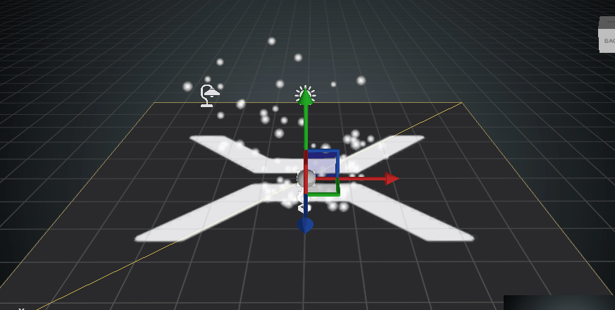
The force field is defined by a bounding shape and several force vectors that operate on the particles based on their relative position to the bounding shape.
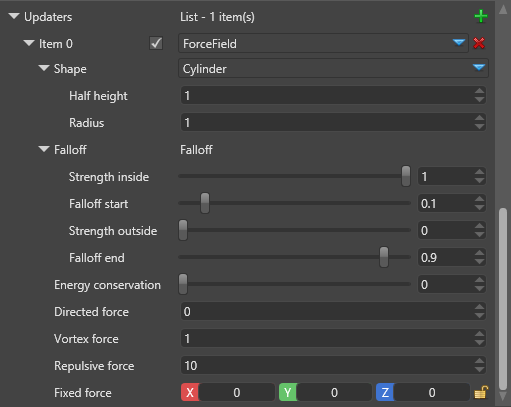
| Property | Description |
|---|---|
| Shape | The bounding shape (sphere, cylinder, box or torus) |
| Falloff | The falloff is a simple linear function which dictates the intensity of the force applied on particles. It is based on the particle's distance from its center. Strength inside is how much of the magnitude applies when the particle is within falloff start distance from the center. Strength outside is how much of the magnitude applies when the particle is more than falloff end away from the center. Both values are relative to the bounding shape size; values inbetween are interpolated between the two magnitudes. Values in the center can still be 0, making the force only work outside the bounding shape. |
| Energy conservation | Which part of the force energy conserved by the particles. Conserved energy is stored as particle velocity and results in gradually increasing speed. Energy not conserved directly applies to the particle's position and is lost when the force vanishes. |
| Directed force | The vector force that moves the particle along the field's central axis (normally upwards) |
| Vortex force | The force that moves the particle around the field's central axis using the right-hand rule for rotation |
| Repulsive force | The force that moves the particle away from the field's center or towards it, if negative |
| Fixed force | The force that moves the particle along a fixed non-rotating and non-scaling axis |
Falloff
The falloff is the change in the forces' strength based on the distance of the particle from the shape's center. The falloff is a function of the relative distance, where distance of 0 is the center, 1 is the shape's boundaries, and more than 1 means the particle is outside the shape.
Particles closer than the falloff start are always affected with the coefficient Strength Inside. Particles farther than falloff end are always affected with the coefficient Strength Outside.
Coefficient for particles in between changes linearly:
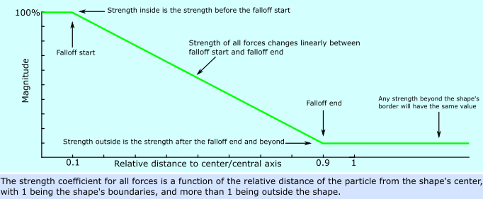
For example, if the bounding shape is a sphere with a radius of 10m, particles within 1m from its center (0.1 x 10m) will be moved with full strength. After the 1m distance the strength linearly decreases until it reaches zero at 9m distance (0.9 x 10m). After that point, the forces don't affect the particle.
Bounding shapes
Sphere
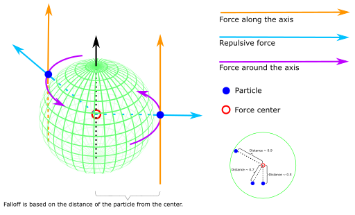
Image license: CC-BY-SA 4.0, sphere image from the "Sphere wireframe" work by Geek3 under CC-BY-SA 3.0
{kind=link}
When the bounding shape is a sphere, the falloff distance is based on the radial distance of the particle from the sphere's center. If the sphere is scaled to an ellipsoid, this distance is also scaled. The distance is relative to the radius, with 1.0 being the sphere's surface.
The directed force vector is parallel to the sphere's local Y axis. The repulsive force vector points from the center to the particle. The vortex force vector goes around the sphere's Y axis at the particle's position (using the right-hand rule for rotation).
Box
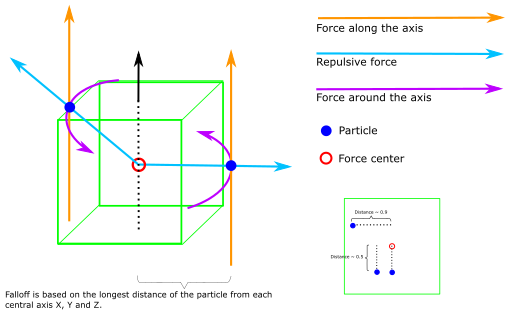
When the bounding shape is a box, the falloff distance is the longest of the three distances on the X, Y and Z axes. The distance is relative to the box's sizes, with 1.0 being the box's surface.
The directed force vector is parallel to the box's local Y axis. The repulsive force vector points from the center to the particle. The vortex force vector goes around the box's Y axis at the particle's position (using the right-hand rule for rotation).
Cylinder
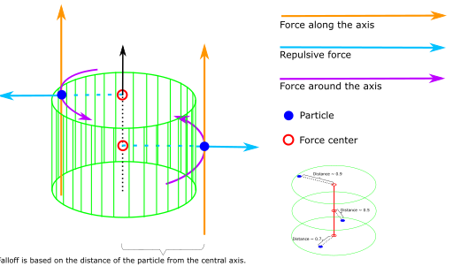
When the bounding shape is a cylinder, the falloff distance is based on the radial distance of the particle from the cylinder's local Y axis. The particle height (position on the Y axis) is ignored unless the particle is outside the cylinder, in which case the distance is always 1.
The directed force vector is parallel to the cylinder's local Y axis. The repulsive force vector points from the cylinder's local Y axis to the particle, so the repulsive force is always horizontal. The vortex force vector goes around the cylinder's Y axis at the particle position (using the right-hand rule for rotation).
Torus
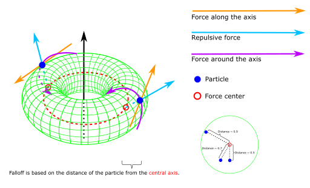
Image license: GFDL, CC-BY-SA 4.0, torus image from the "A simple Torus" work by Yassine Mrabet under GFDL, CC-BY-SA 3.0
{kind=link}
When the bounding shape is a torus, the field's nature changes completely. The falloff distance is based on the radial distance of the particle from the torus's inner circle (axis of revolution, shown in red), choosing a point on the circle closest to the particle.
The directed force vector is tangent to the axis of revolution at the point closest to the particle. The repulsive force vector points from the axis to the particle. The vortex force vector goes around the directed force vector using the particle's position relative to the axis (using the right-hand rule for rotation).
While the math is a little complicated, using the torus force field isn't. Try it out!
Gravity
The gravity updater is a simplified force which affects all particles regardless of their position, with a constant force vector which doesn't scale or rotate. It's editable, so you can use it in projects with different scales and behavior.
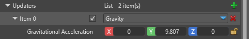
The gravity force ignores most properties such as offset and inheritance, and only uses the following attributes:
| Property | Description |
|---|---|
| Gravitational acceleration | The gravity force vector that defines the acceleration for all affected particles. The default value matches the average gravity on Earth. |
Direction from speed
Direction from speed is a post-updater, meaning it resolves after updaters which are not post-updaters, even if they appear later in the list.
It has no properties and simply updates the particle's direction to match its speed. It uses the difference between the positions of the particle from the last frame and isn't directly dependent on velocity. This means even if the particle's own velocity is 0 and it's only moved by external forces, direction from speed resolves correctly.
Direction isn't a normalized vector and changes its magnitude to match the delta distance. It overwrites any previous direction parameters, such as from an initializer.
Color animation
Color animation is a post-updater, meaning it resolves after updaters which aren't post-updaters, even if they appear later in the list.
Color animation updates the particle Color field by sampling a curve over the particle's normalized lifetime (0 to 1). You can set a secondary curve in which case the particles will have slightly varied colors. Color animation overwrites any previous Color parameters, such as Initial Color.
The curve values are given as Vector4, corresponding to RGBA with standard values between 0 and 1. Values above 1 are valid for RGB only (not Alpha) and can be used for HDR rendering.
Rotation animation
Rotation animation is a post-updater, meaning it resolves after updaters which are not post-updaters, even if they appear later in the list. It's strictly a single axis rotation, used for billboarded particles.
Rotation animation updates the particle's Rotation field by sampling a curve over the particle's normalized lifetime (0 to 1). You can set a secondary curve in which case the particles will have slightly varied rotations.
Rotation animation overwrites any previous Rotation parameters, such as Initial Rotation. If you need additive kind of animation check if the Shape Builder supports it (found in the Shape Builder's properties). Additive animations are not preserved in particle fields and do not persist, but can be applied in addition to any fields the particles already have.
Size animation
Size animation is a post-updater, meaning it resolves after updaters which aren't post-updaters, even if they appear later in the list.
This is strictly a uniform size. Size animation updates the particle's Size field by sampling a curve over the particle's normalized lifetime (0 to 1). You can set a secondary curve, in which case the particles have slightly varied sizes.
Size animation overwrites any previous Size parameters, such as Initial Size. If you need additive kind of animation, check if the Shape Builder supports it (in the Shape Builder properties). Additive animations aren't preserved in particle fields and don't persist, but can be applied in addition to any fields the particles already have.